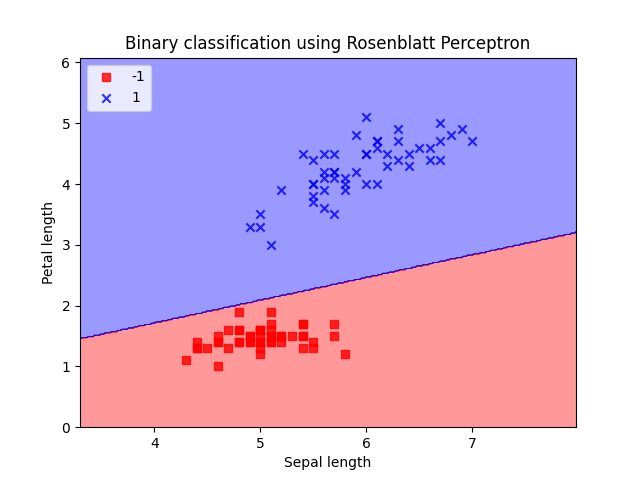
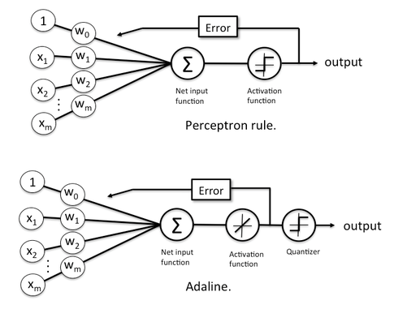
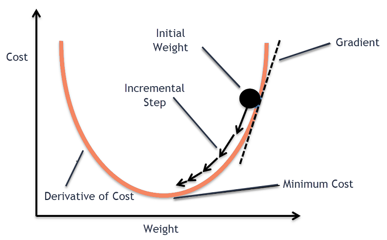
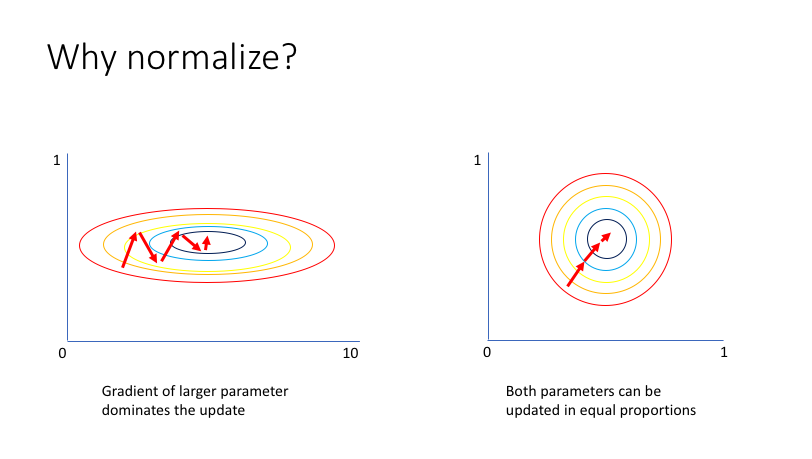
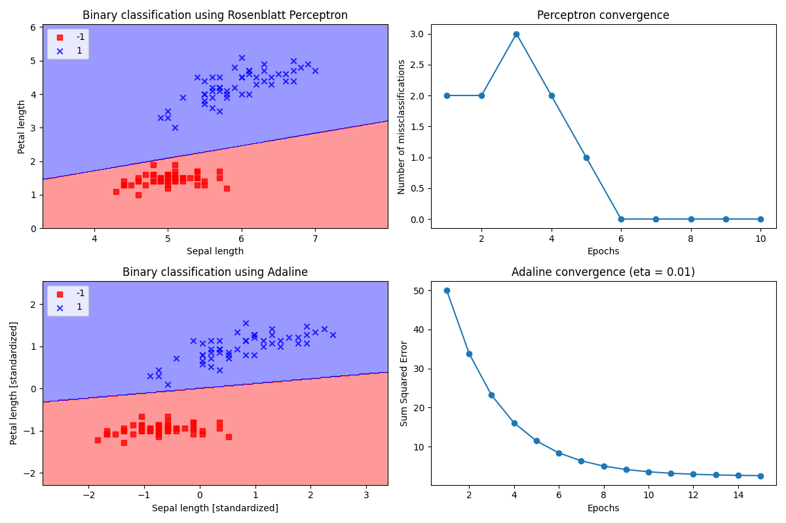

On this journey:
MCP model & PerceptronAdaline
Talk is cheap! Show me the code
Code is cheap! Show me the experiments
Or go back to homepage
MCP Model & Perceptron
Around 1943, Warren McCulloch (neurophysiologist) and Walter Pitts (mathematician) have a clear
objective in mind:
to understand the mechanisms involved in a biological brain and exploit them in AI field.
They recreated a nerve cell as a binary logic gate
[1].
Dendrites receive multiple signals which enter the cell body; if the accumulated signal exceeds a certain threshold an output signal is sent in output through the axon.
A few years later Frank Rosenblatt (psychologist) published the first concept of perceptron learning and an algorithm to automatically tune dendrites’ sensibility to make a decision. [2].
Dendrites receive multiple signals which enter the cell body; if the accumulated signal exceeds a certain threshold an output signal is sent in output through the axon.
A few years later Frank Rosenblatt (psychologist) published the first concept of perceptron learning and an algorithm to automatically tune dendrites’ sensibility to make a decision. [2].

Consider \(z\) our input function (see the image further on), \(w_j\) the weight associated to an input
\(x_j\) and let \(\phi(z)\)
be the activation function.
\[z = w_1 x_1 + ... + w_mx_m \]
\[ = \sum_{m}^{j=0}x_jw_j = w^Tx \]
\[ \phi(z) =
\left\{\begin{array}{@{}l@{}}
1 & \textrm{if $z >= \theta$}\\
-1 & \textrm{otherwise}
\end{array}\right.\, \]
Alternatively, we could consider the activation threshold \( \theta \) already as a weight:
\[w_0 = - \theta , x_0 = 1\]
\[z = w_0x_0 + w_1x_1 + ... + w_mx_m\]
\[ \phi(z) =
\left\{\begin{array}{@{}l@{}}
1 & \textrm{if $z >= 0$}\\
-1 & \textrm{otherwise}
\end{array}\right.\, \]
In other words, the idea behind both MCP and Perceptron is to use a reductionist approach to emulate how
a single biological neuron works, which can or cannot propagate an electrical impulse.

The following are the points we must keep in mind when implementing the Perceptron class (see
later) to
classify a binary dataset:
- Initialize \(w_j\) to 0
- For each training sample \(x^{(i)}\):
- Compute output \(\hat{y}\) through
a dot product
net_input(X)and the activation functionpredict(X) - Update weights \(w_j = w_j + \Delta w_j\)
\(\Delta w_j = \eta (y^{(i)} - \hat{y}^{(i)}) x_j^{(i)} \)
which makes adjustements proportional to input value.
If \(1\) is predicted correctly there is no adjustment to \(w_j\): \[\Delta w_j = \eta(1-1)x_j^{(i)} =0\]
Otherwise weights are updated towards the direction of the real, correct prediction :
\[\Delta w_j = \eta(1-(-1))x_j^{(i)} = \eta(2)x_j^{(i)}\]
If the two classes can be separated with a linear decision boundary, weights will eventually converge to a
point where no more updates occur (figure).
In all the other cases, the adjustment of the weights will never alt and we ought to stop the training
forcibly by setting
a threshold for the number of misclassifications or a maximum number of epochs.


Adaline
Now we are going up to examine another mono-level neural network called Adaline
, presented by Bernard Widrow and his PhD student Tedd Hoff in 1960
[3].
Adeline is particularly interesting because it shows the primary concept of finding
the minimum of a cost function which is fundamental to comprehend more sophisticated algorithms.
The main distinction between Adeline learning function and Perceptron is that weights
are updated starting from a linear activation function instead of a unit-step one.

In Adeline, \(\phi(z) = z \) is computed to tune the weights,
while the final classification is predicted by a quantizer (similar to the previous seen unit-step function) as shown in the figure.
Thanks to this improvement we can exploit the continuous output to tune our model instead of seeing the world in black or white
One of the most considerable ingredients in supervised ML consists of defining a target function and optimise it during the learning phase.
Let’s define a cost function to learn weights in terms of SSE between the computed result and the expected label.
Thanks to a technique called gradient descent (more here) it’s possible to update our weights by moving away from the gradient \(\triangledown J(w) \).
Let’s define a cost function to learn weights in terms of SSE between the computed result and the expected label.
\[J(w) = \frac{1}{2} \sum_{i}(y^{(i)} - \phi(z^{(i)}) )^2 \]
\(\frac{1}{2}\) is added only to make derivative easier to compute later.
The advantage of this function is that it is continuous, differentiable and it is convex, thus, gradient descent method can be used to find which weights minimise the function.
The advantage of this function is that it is continuous, differentiable and it is convex, thus, gradient descent method can be used to find which weights minimise the function.
Thanks to a technique called gradient descent (more here) it’s possible to update our weights by moving away from the gradient \(\triangledown J(w) \).

Let's do the math, yay! So, our cost function is generally defined as \(w = w + \Delta w\) and we want to "move away" from the gradient...
\[\Delta w = -\eta \triangledown J(w) \]
\[\frac{\partial J}{\partial w_j} = \frac{\partial}{\partial w_j} \frac{1}{2} \sum_i (y^{(i)} - \phi(z^{(i)}) )^2 \]
\[=\frac{1}{2}\sum_i 2(y^{(i)} - \phi(z^{(i)}) ) \frac{\partial}{\partial w_j} (y^{(i)} - \phi(z^{(i)}) \]
\[=\sum_i (y^{(i)} - \phi(z^{(i)}) ) \frac{\partial}{\partial w_j} ( y^{(i)} - \sum_i (w_j^{(i)} x_j^{(i)}) ) \]
\[=\sum_i (y^{(i)} - \phi(z^{(i)}) ) (-x_j^{(i)}) \]
\[\triangledown J(w) = \frac{\partial J}{\partial w_j} = -\sum_i(y^{(i)} - \phi(z^{(i)})) x_j^{(i)} \]
This may look similar to Perceptron learning rule but keep in mind that \(\phi(z)\) is a real number and not just a class label.
Furthermore, weights are updated considering the entire training set instead of incrementing gradually
after each sample.
Implementations
Perceptron
import numpy as np
class Perceptron(object):
# Perceptron Classifier
# Parameters
# eta : float, learning rate (between 0.0 and 1.0)
# n_iter : int, passes over the training dataset
# Attributes
# w_ : weights after fitting
# errors_ : number of misclassifications in each epoch
def __init__(self, eta=0.01, n_iter=10):
self.eta = eta
self.n_iter = n_iter
Here we simply defined the ingredients of our delicious Perceptron class;
note the name convention for
w_ and errors_ which
reminds to scikit-learn (I'll cover that in the future).
We also define n_iter to stop the learning process after a certain number of epochs if weights update
is not converging.
def net_input(self, X):
return np.dot(X, self.w_[1:]) + self.w_[0]
def predict(self, X):
return np.where(self.net_input(X) >= 0.0, 1, -1)
See
net_input as \(z\) and predict as \(\phi(z)\). Cool part is coming now!
def fit(self, X, y):
self.w_ = np.zeros(1 + X.shape[1])
self.errors_ = []
for _ in range(self.n_iter):
errors = 0
for xi, target in zip(X, y):
update = self.eta * (target - self.predict(xi))
self.w_[1:] += update * xi
self.w_[0] += update
errors += int(update != 0.0)
self.errors_.append(errors)
return self
Fit method cycles over each sample, updating weights as we defined before. Also, we collect the number of misclassifications per epoch to draw a convergence plot later (see experiments section).
Adaline
Since we just need how weights are updated,
fit method is all we need to change.
def fit(self, X, y):
self.w_ = np.zeros(1 + X.shape[1])
self.cost_ = []
for i in range(self.n_iter):
output = self.net_input(X)
errors = (y - output)
self.w_[1:] += self.eta * X.T.dot(errors)
self.w_[0] += self.eta * errors.sum()
cost = (errors**2).sum() / 2.0
self.cost_.append(cost)
return self
Gradient descent could be computationally expensive
because we
need to visit the entire dataset every
time we move towards the
cost function global minimum.
A common alternative is the so-called stochastic (or “online”) gradient descent, where each weight is updated on the fly.
I'll deepen the topic later on, along with mini-batch gradient descent.
A common alternative is the so-called stochastic (or “online”) gradient descent, where each weight is updated on the fly.
I'll deepen the topic later on, along with mini-batch gradient descent.
Experiments
Let’s import the famous iris dataset to train Perceptron
and Adeline and draw the separation boundary between "setosa" and "versicolor" class.
import pandas as pd
import matplotlib.pylab as plt
import numpy as np
from sklearn.datasets import load_iris
from neurons import Perceptron, AdalineGD
iris = load_iris()
df = pd.DataFrame(data=iris.data, columns=iris.feature_names)
df["target"] = iris.target # setosa: 0, versicolor: 1, virginica: 2.
# Consider only sepal and petal length of setosa and versicolor:
X = df.drop(["sepal width (cm)", "petal width (cm)" ,"target"], axis='columns')[0:100].values
y = np.where(df.target[0:100] == 0, -1, 1)
If a sample refers to iris Setosa, we assign -1 to it and 1 otherwise.
We can train our models as follow:
# Train perceptron
ppn = Perceptron(eta=0.1, n_iter=10)
ppn.fit(X, y)
# Train Adaline
# Dataset is standardized in order to guarantee
# gradient-descent optimal performance.
X_std = np.copy(X)
X_std[:,0] = (X[:,0] - X[:,0].mean()) / X[:,0].std()
X_std[:,1] = (X[:,1] - X[:,1].mean()) / X[:,1].std()
ada_eta = 0.01
ada = AdalineGD(n_iter=15, eta=ada_eta)
ada.fit(X_std, y)
Machine learning algorithms often require data to be normalized to confront attributes with
different unit measures or generally speaking guarantee optimal performance.
In our case, iris Versicolor petal length seems to be way higher than Sentosa's so it could “dominate” the update cycle.

Also, Thanks to
errors_ we can draw a convergence plot to see how fast our models converged to 0.
And tadan!

Perceptron reaches convergence in just 6 iterations while Adeline (\(\eta=0.01 \)) it's a bit slower but intuitively
we can see how the latter model seems to predict classes more reasonably than the former.